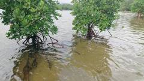
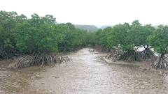
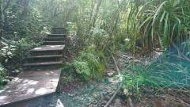
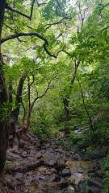
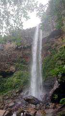
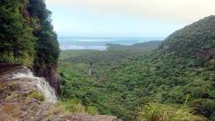

|
朝一で港に行き、船で西表島へ。運悪く大型台風が接近しており、帰りに乗るつもりだった船がすでに欠航らしい。
安全に戻れる予定を考えつつ少し焦り。
島へ着いて、店名で選んだやまねこレンタカーさんで軽自動車を借りた。石垣島の駐車場に残してきた車と2台同時に借りている状況になった。
今日はジャングルをトレッキングして滝を見に行く予定で、コースは2通り考えていた。
まず干潟から川岸を上るコースへ向かってみたが、まだ潮が高すぎて断念。
ただ、マングローブの広い干潟は不思議な光景で面白かった。午後あらためて同じ場所に来てみたら潮がひいて様相が変わっており、悠々歩ける状態になっていた。
マングローブは海水に耐える強い植物のように見えるが、生存競争に負けて海に追いやられた結果という話を思い出す。
| マングローブの干潟(朝) | マングローブの干潟(昼) |
|  |
 |
山の中腹まで車で上り、そこからトレッキング開始。
最初から道を間違えたが、登山ルートに目印がついていて迷わないようにはなっている。
ほとんどの観光客はカヌーで滝の近くまで行くツアーのようで、山の中では誰にも会わなかった。
ここのトレッキングは実に気持ちよかった。水気に溢れるジャングルは目にする植物も普段の登山と違い、
鳥だか虫だかわからない声がたえず賑やかに聞こえたり湿地で大きなカニが歩き回っていたりと生命感に溢れる。
| 右のパイプ沿いが正解ルート | ジャングルトレッキング |
|  |
 |
山を越えて滝の下へ降りる。途中からカヌー客たちと合流する形になる。
ウォーターシューズを履いてきたが苔で滑るのでいまいちだった。滑りながらもたどりついたピナイサーラの滝つぼは美しく迫力があった。
さらに30分ほど山を戻り、今見た滝の上に出られる。海を見渡せる側に渡るため滝の直前の水を渡るのが怖かったが、来た甲斐はあった。
| ピナイサーラの滝 | 滝の上から(怖い) |
|  |
 |
西表島の自然は本州のそれとはかけ離れていて面白い。もっとゆっくり滞在したかった。
あまり長居もせず山を下る。予定より遅れており、食料も持ってこなかったのでかなりフラフラになっている。
町へ出て食事をとってからガタゴト車を走らせ、美しいビーチに出た。
当初はここで泳ごうかと思っていたが、帰りの船を早めて戻ることにする。台風の接近を感じさせる風が徐々に強まってくる。
帰りの船には無事乗れたが、風が強くよく揺れる。船酔いはしないが打撲に注意するレベル。
そして石垣に戻ったところで、明日の帰りの飛行機が欠航になったことを告げるメールが届く。
(楽しい旅行編 終わり)
|